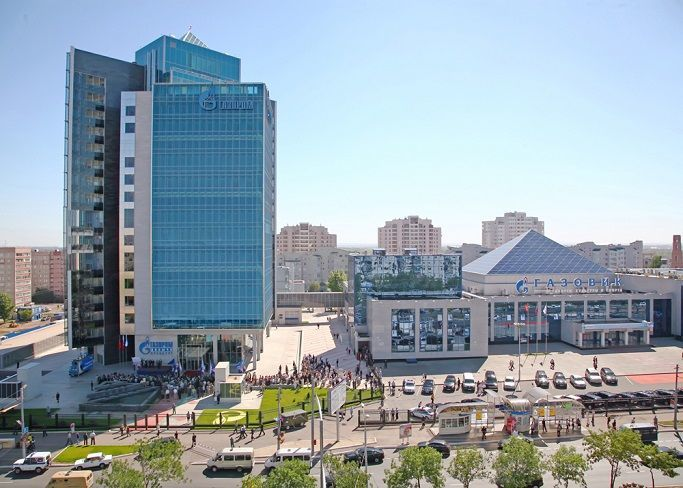
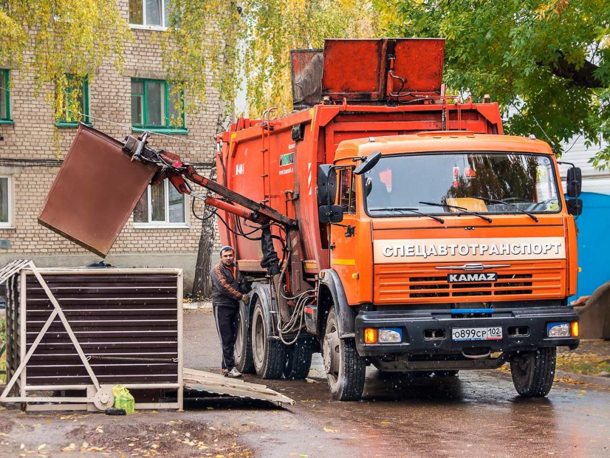

Услуги по вывозу мусора
Частные компании не только дополняют перечень
услуг коммунальщиков, но и выполняют их
работу под заказ. Главное отличие исполнения
тут состоит в возможности совершить срочный
вывоз мусора в Оренбурге (включая темное время суток).
Опции, недоступные для городских служб, следующие:
- Расчистка частной территории и подготовка строительной площадки
- Сортировка собранного материала согласно санитарно-гигиенических правил
- Приведение в порядок экстерьера здания
- Все виды уборки в помещение

Как проходит «Мусорная реформа» в Оренбургской области?
ООО «Природа»: в Орске идет переходный период
Исполнительный директор ООО «Природа» Константин Манаев
рассказал, как проходит в регионе переход на единого
оператора по вывозу твердых коммунальных отходов. Из
крупных городов Оренбургской области перевозчик мусора
изменился только в Орске.

Есть сложности. Были моменты, когда управляющие компании не сообщали
вовремя о том, что компания по вывозу мусора, которая обслуживала
их, перестала работать с 1 января. Такой случай получился во дворе
дома 9 по ул. Салмышской. Сейчас этот двор уже стоит в графике.
В Оренбурге мусор вывозит компания «Экоспутник», которая и раньше
этим занималась, с ней заключен договор.
В Орске идет переходный период. Перевозчик, который работал
там до 1 января, прекратил свою работу в последний день
прошлого года. ООО «Природа» начала свою работу с 1 января.
Первым делом пришлось менять контейнерный парк. Этот момент,
совмещенный с праздниками, и вызвал ряд неудобств.
Если бы это процесс прошел бы 1 февраля, то переход
был бы более гладкий. Сейчас в Орске контейнерный парк
практически весь сменился, сегодня «Горспецтранс» забирает
последние свои контейнеры, а ООО «Природа» выставляет свои
контейнеры и вывозит мусор. Есть моменты, что ранее стояли
8-кубовые «лодочки», а сейчас стоят металлические контейнеры,
возможно их переполнение. Когда мы поймем время наполнения новых
контейнеров, будет сформирован более подходящий график. С 5 января
работа по вывозу мусора будет проходить в штатном режиме, думаю
к 10 января все вопросы будут сняты окончательно.
В Бузулуке компания по вывозу мусора не изменилась,
с ней заключен договор. Сейчас эта компания начала работу
по вывозу мусора из соседних районов от Бузулука. Также
начался вывоз мусора из ряда сельских поселений в различ
ных районах Оренбургской области, где раньше мусор не выв
озился вообще. Сегодня 4 января, а мы уже начинаем работа
ть в штатном режиме. Понятно, что и техника новая, она ещ
е не приработалась, есть и другие технические вопросы.
Вывоз мусора и старой мебели в Оренбурге
осуществляют компании, обладающие не рядовыми
техническими возможностями. Ведь, к примеру, демонтаж
строительных конструкций нередко требует
наличия альпинистского снаряжения. Порезка
и удаление старого дерева – специальных
электроприборов, а транспортировка многотонного
груза – тяжелой автомобильной техники. Подобным
ассортиментом инструментария владеют такие организации:
Благодаря работе профессионалов вывоз и
утилизация мусора в Оренбурге – процесс,
не отнимающий у заказчика много времени.
А если внимательно изучить проблему – то и денег.
Ведь пребывание старья на складе подчас обходится дороже.
Сколько стоит вывоз мусора
Клиенту, заранее подготовившему мешки с
отходами возле подъезда, придется вложить
в сделку менее двух тысяч рублей. Собрать
максимальный объем, предусматриваемый такой ценой
– 15 ц, можно, объединив усилия с соседями. Наценка
в размере 200-400 рублей прибавляется в случае
- Длительного времени погрузки, связанного с особыми условиями процесса (более получаса)
- Необходимости пересечения черты города
- Нужда в герметичном иди другом специальном контейнере